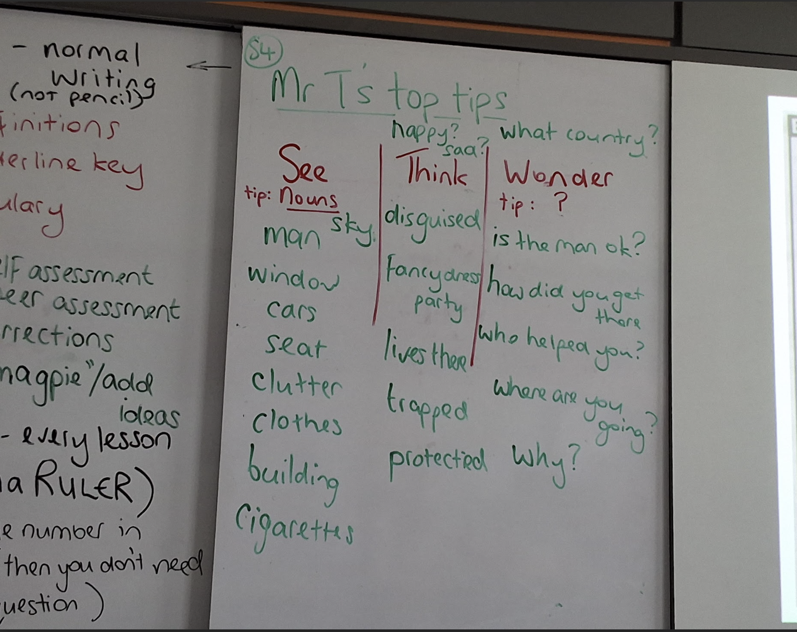
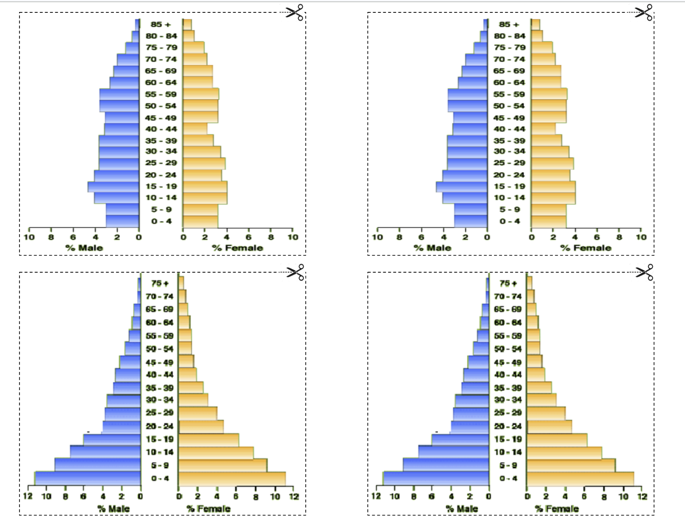
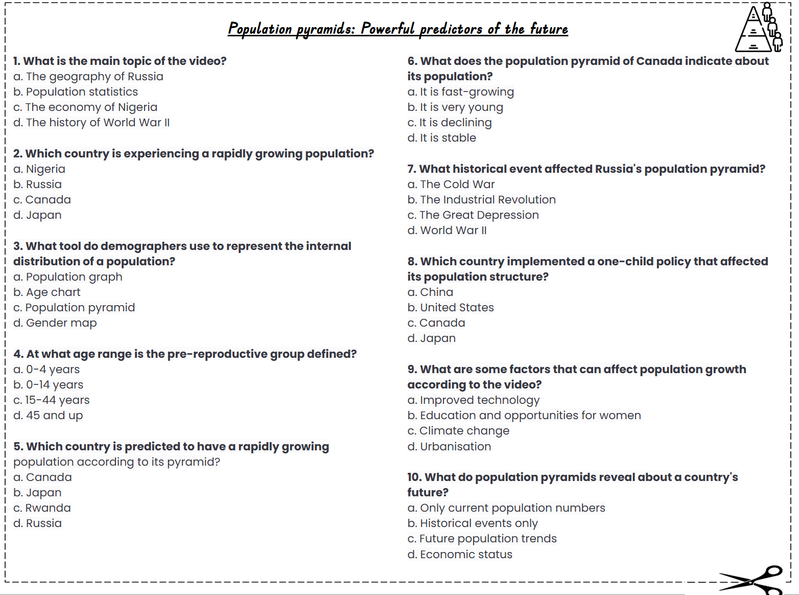
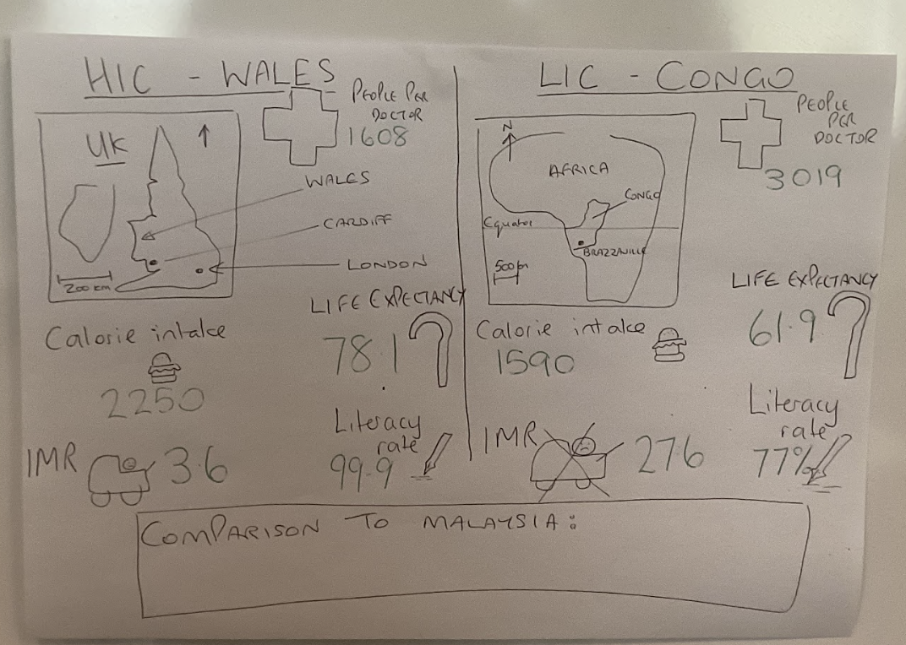

8 Billion and Counting → Population Demographics → Demographic Transition Model → Comparing HIC vs LIC
'Population: Population of the world, Demographic Transition Model, Population pyramids, Comparing countries — demographic characteristics.'
'세계 인구, 인구 변천 모델(DTM), 인구 피라미드, 국가 비교 — 인구학적 특성.'
'50-question multiple-choice quiz covering all three lessons.' Online (Quizizz).
'3개 lesson 전체를 다루는 객관식 50문제'. 온라인 (Quizizz).
Lesson Booklets: Lesson 1 - 8 Billion and Counting, Lesson 2 - Population Demographics, Lesson 3 - The DTM.
레슨 책자: Lesson 1 - 80억과 계속 증가, Lesson 2 - 인구 통계, Lesson 3 - DTM.
The world now has over 8 billion people (8,000,000,000+). Growth has been very rapid since 1800 (then only ~1 billion).
세계 인구는 현재 80억 명 이상 (8,000,000,000+). 1800년 (당시 약 10억)부터 매우 빠르게 증가했습니다.
From class whiteboard, Mr T's top tips for analysing photos:
화이트보드, Mr T의 사진 분석 팁:
• SEE — list nouns (e.g. man, window, cars, seat, clutter, clothes, building, cigarettes).
• SEE(보임) — 명사 나열 (예: man, window, cars, seat, clutter, clothes, building, cigarettes).
• THINK — happy/sad? (e.g. disguised, fancy dress party, lives there, trapped, protected).
• THINK(생각) — 행복?슬픔? (예: disguised, fancy dress party, lives there, trapped, protected).
• WONDER — what country? (e.g. Is the man ok? How did you get there? Who helped you? Where are you going? Why?).
• WONDER(궁금) — 어느 나라? (예: 그 사람 괜찮나? 어떻게 갔나? 누가 도왔나? 어디 가나? 왜?).

A population pyramid shows the age and sex structure of a country (left = male, right = female; bottom = young, top = old).
인구 피라미드는 국가의 연령·성별 구조를 보여줍니다 (왼쪽=남성, 오른쪽=여성, 아래=어린, 위=노인).
From class print: there are four common shapes — expanding (wide base, narrow top), stable (more even), contracting (narrow base), and declining.
수업 프린트의 4가지 흔한 모양 — 확장형(아래 넓고 위 좁음), 안정형(고르게), 축소형(아래 좁음), 감소형.

From the lesson video quiz, key questions:
비디오 퀴즈의 주요 질문들:
• What is the main topic of the video? (Population pyramids)
• 비디오의 주제는? (인구 피라미드)
• What does the population pyramid of Canada indicate about its population? (It is fast-growing / very young / declining / stable)
• 캐나다 인구 피라미드는 무엇을 보여주는가?
• Which country is experiencing a rapidly growing population? (Nigeria / Russia / Germany / Japan)
• 어느 나라가 인구가 빠르게 증가하는가? (나이지리아 / 러시아 / 독일 / 일본)
• What tool do demographers use to represent the internal distribution of a population? (Population graph / Age chart / Population pyramid / Gender map)
• 인구학자가 사용하는 도구? (인구 그래프 / 연령 차트 / 인구 피라미드 / 성별 지도)
• At what age range is the pre-reproductive group defined? (0-4 / 0-14 / 15-64 / 45 and up)
• 생식 전 연령대는 몇 살? (0-4 / 0-14 / 15-64 / 45세 이상)
• Which historical event affected Russia's population structure? (Cold War / Industrial Revolution / Great Depression / World War II)
• 러시아 인구 구조에 영향을 준 역사적 사건? (냉전 / 산업혁명 / 대공황 / 2차 대전)

The Demographic Transition Model (DTM) is a model that shows how a country's birth rate and death rate change as it develops, and how this affects population growth.
인구 변천 모델(DTM)은 국가가 발전하면서 출생률과 사망률이 어떻게 변하는지, 그것이 인구 증가에 어떤 영향을 주는지 보여주는 모델입니다.
It has 5 stages, from pre-industrial to post-industrial societies.
이 모델은 산업화 이전부터 산업화 이후까지 5단계가 있습니다.
Stage 1 (High Stationary): High birth rate, high death rate → population stays low. Pre-industrial.
1단계 (고정체기): 높은 출생률·높은 사망률 → 인구 낮게 유지. 산업화 이전.
Stage 2 (Early Expanding): High birth rate, death rate falls (better food, medicine) → population grows fast. Many LICs.
2단계 (초기 확장): 높은 출생률, 사망률 하락 (식량·의약 개선) → 인구 급증. 많은 저소득국(LIC).
Stage 3 (Late Expanding): Death rate stays low, birth rate starts to fall (contraception, women's education) → population still grows but slows.
3단계 (후기 확장): 사망률 낮게 유지, 출생률 하락 시작 (피임·여성 교육) → 인구 증가 둔화.
Stage 4 (Low Stationary): Low birth rate, low death rate → population high but stable. Most HICs (e.g. UK, USA).
4단계 (저고정기): 낮은 출생률·낮은 사망률 → 인구 많지만 안정. 대부분 고소득국 (영국·미국).
Stage 5 (Declining): Birth rate falls BELOW death rate → population shrinks. Japan, Germany.
5단계 (감소): 출생률이 사망률보다 낮아짐 → 인구 감소. 일본·독일.
P (Point): Begin by stating the clear and concise comparison point.
Example: 'Japan and Afghanistan are very different when it comes to their fertility rates.'
P (주장): 명확한 비교 포인트로 시작.
예: '일본과 아프가니스탄은 출산율에서 매우 다르다.'
E (Evidence): Specific data or statistics.
Example: 'In Japan, which is a highly developed country, the average number of children a woman has is about 1.3. In Afghanistan, the average fertility rate is much higher at around 4.6 children per woman.'
E (근거): 구체적 데이터·통계.
예: '고소득국 일본은 여성당 평균 출산 1.3명, 아프가니스탄은 4.6명.'
'In Japan, women often choose to focus on their education and careers, which can delay or reduce the number of children. The country also has excellent healthcare and social services, so families don't feel the need to have many children.'
'일본 여성은 교육과 경력에 집중하기로 선택, 출산을 늦추거나 줄임. 또한 의료와 사회서비스가 우수해 많은 자녀가 필요 없음.'
'However, in Afghanistan, poverty is widespread, and there is less access to education and healthcare, especially for women. Many Afghan families have larger families because cultural traditions support it, and high infant mortality rates mean parents often have more children to ensure some survive.'
'그러나 아프가니스탄은 빈곤이 광범위, 특히 여성에게 교육·의료 접근이 적음. 문화 전통이 큰 가족을 지지, 높은 영아 사망률로 일부라도 살아남게 더 많이 낳음.'
'These differences in fertility rates have big effects. In Japan, the low birth rate is causing an aging population, which creates problems like fewer workers and economic challenges. In Afghanistan, the high birth rate adds to poverty, puts pressure on resources, and slows the country's progress, leading to social and political problems.'
'출산율 차이는 큰 영향을 끼침. 일본은 낮은 출생률로 고령화 인구 → 노동자 부족과 경제 문제. 아프가니스탄은 높은 출생률이 빈곤을 가중, 자원에 압박, 발전 둔화 → 사회·정치 문제.'
Student handwritten model from class (20250917 모델예시.png):
수업의 학생 손글씨 모델 (2025/09/17):
HIC — Wales: Life expectancy 78 · Calorie intake 2250 · IMR 3.6 · Literacy rate 99%
HIC — 웨일스: 기대수명 78세 · 칼로리 섭취 2250 · 영아사망률 3.6 · 문해율 99%
LIC — Congo: Population pyramid wide-base · Life expectancy 61 · Calorie intake 1890 · IMR 27.6 · Literacy rate 77%
LIC — 콩고: 피라미드 밑이 넓음 · 기대수명 61세 · 칼로리 섭취 1890 · 영아사망률 27.6 · 문해율 77%

Stage 1 (High Stationary): High birth rate + high death rate → population stays low. Pre-industrial societies.
1단계: 높은 출생률·높은 사망률 → 인구 낮게 유지. 산업화 이전.
Stage 2 (Early Expanding): High birth rate, but death rate falls (medicine, food) → rapid population growth. Many LICs.
2단계: 높은 출생률, 사망률 하락 → 인구 급증. 많은 LIC.
Stage 3 (Late Expanding): Death rate stays low, birth rate starts to fall → growth slows.
3단계: 사망률 낮게 유지, 출생률 하락 시작 → 증가 둔화.
Stage 4 (Low Stationary): Low birth + low death → high stable population. Most HICs (UK, USA).
4단계: 낮은 출생·사망 → 안정된 높은 인구. 대부분 HIC.
Stage 5 (Declining): Birth rate below death rate → population shrinks. Japan, Germany.
5단계: 출생률<사망률 → 인구 감소. 일본·독일.
P: Japan and Afghanistan are very different when it comes to their fertility rates.
P: 일본과 아프가니스탄은 출산율이 매우 다릅니다.
E (data): In Japan, a highly developed country, the average woman has about 1.3 children. In Afghanistan, the rate is much higher at around 4.6 children per woman.
E (자료): 고소득국 일본은 여성당 약 1.3명, 아프가니스탄은 4.6명.
E (explain): In Japan, women focus on education and careers, and the country has excellent healthcare. In Afghanistan, widespread poverty, less access to education and healthcare (especially for women), cultural traditions, and high infant mortality lead families to have more children.
E (설명): 일본 여성은 교육·경력에 집중, 우수한 의료. 아프가니스탄은 빈곤·교육·의료 부족, 문화·높은 영아사망률로 많은 자녀를 낳음.
L: These differences have big effects: Japan's low birth rate causes an aging population with fewer workers; Afghanistan's high birth rate adds to poverty and slows progress.
L: 이 차이는 큰 영향: 일본 = 고령화·노동자 부족, 아프가니스탄 = 빈곤 가중·발전 둔화.
A population pyramid is a graph showing the age and sex structure of a population (left = male, right = female; bottom = young, top = old).
인구 피라미드는 인구의 연령·성별 구조를 보여주는 그래프 (왼쪽=남, 오른쪽=여, 아래=어린, 위=노인).
1. Expanding (wide base, narrow top) — fast-growing population, high birth rate (many LICs in DTM Stage 2).
1. 확장형 (밑 넓고 위 좁음) — 빠른 인구 증가, 높은 출생률 (DTM 2단계 LIC).
2. Stable (more even bars) — stable population, balanced birth and death rates (HICs in DTM Stage 4).
2. 안정형 (위아래 비슷) — 안정된 인구, 출생·사망 균형 (DTM 4단계 HIC).
3. Contracting (narrow base) — declining population, low birth rate (e.g. Japan, Germany — DTM Stage 5).
3. 축소형 (밑 좁음) — 감소하는 인구, 낮은 출생률 (예: 일본·독일 — DTM 5단계).
Answer: (c) A shrinking workforce.
정답: (c) 노동력 축소.
Explanation: The one-child policy meant fewer babies were born for decades, so the number of working-age adults is now decreasing while the elderly population grows.
설명: 한 자녀 정책으로 수십 년간 출생이 줄어 노동 가능 성인 수가 줄고 노인 인구는 증가.
(a) Stage 2 (Early Expanding) of the DTM.
(a) DTM 2단계 (초기 확장).
(b) Three things:
(b) 3가지:
1. High birth rate — many young children at the base.
1. 높은 출생률 — 밑에 어린 자녀가 많음.
2. Short life expectancy / high death rate among older people — narrow top means few old people.
2. 짧은 기대수명 / 노인 사망률 높음 — 위가 좁음.
3. Probably a low-income country (LIC) still developing, like many African nations.
3. 아직 발전 중인 저소득국(LIC)일 가능성 (많은 아프리카 국가들처럼).
Wales (HIC): High life expectancy (78) indicates good healthcare and lifestyle. Very low IMR (3.6) suggests excellent maternal and infant care. Almost universal literacy (99%) implies strong education systems.
웨일스(HIC): 높은 기대수명(78)은 좋은 의료·생활을 나타냄. 매우 낮은 영아사망률(3.6)은 우수한 산모·영아 케어를 시사. 거의 100% 문해율(99%)은 강한 교육 시스템을 함축.
Congo (LIC): Much shorter life expectancy (61) suggests weaker healthcare and possibly disease/conflict. High IMR (27.6) indicates many babies die before age 1 — sign of poverty. Lower literacy (77%) implies limited access to education.
콩고(LIC): 훨씬 짧은 기대수명(61)은 약한 의료·질병/갈등 가능성. 높은 영아사망률(27.6)은 1세 전 사망이 많음 — 빈곤의 신호. 낮은 문해율(77%)은 교육 접근 제한.